Verification Checklist and Incident Readiness
Part 3 turns controls into operational checks: pre-rollout verification, runtime monitoring, and incident response routines.
Security Whitepaper Series
Read in order: trust boundary -> control matrix -> verification -> token hardening -> transport and auditability.
Part 3 is about proof, not intent. After defining threats and controls, teams need a repeatable verification routine and incident-readiness posture that survives real operational pressure.
Bridge from control matrix to operational verification
Part 2 listed controls and owners. Part 3 defines how to verify them on a schedule, how to detect drift, and how to run first-response triage when something breaks. Part 4 then zooms into token hardening, where many incidents begin.
1. Verification routine design
A practical verification routine has three layers:

- Pre-rollout checks: boundary assumptions, token behavior, and route profile validity.
- Periodic checks: control drift checks on token lifecycle, routes, and release-integrity process.
- Incident-triggered checks: focused validation when alerts or anomalous behavior appears.
This layered approach avoids two extremes: one-time verification theater and excessive manual testing overhead.
2. Verification checklist structure
Each checklist item should include expected signal and failure interpretation. Example fields:
- control id and objective;
- test command or operation path;
- expected output and failure signature;
- owner and escalation path;
- evidence artifact location.
Without expected failure signatures, teams often misclassify healthy rejection behavior as product defects.
3. Incident readiness model
Incident readiness is primarily about response clarity. We recommend a four-step model:
- Classify event by scope and control class.
- Contain exposure path (credential, token, route, or artifact).
- Collect minimum evidence set for root-cause and stakeholder update.
- Apply corrective action and update checklist/runbook.
This model keeps incident handling structured even when cross-team communication is noisy.
4. Triage taxonomy for faster root-cause isolation
Use stage/reason patterns as primary triage axis. For example:

stage=config_validate: missing local configuration or token/profile mismatch.stage=proxy_connect: egress route or proxy endpoint issue.stage=target_connect: upstream provider path blocked or unstable.reason=dispatch_failure: request failure before provider status response.
This taxonomy prevents expensive triage loops where teams rotate between provider console, endpoint checks, and proxy checks without a deterministic order.
5. Case study: verification drift after initial launch
A common pattern: launch month has strict verification, quarter two relaxes routine, quarter three incident response slows because evidence paths are stale. The fix is not more tooling; it is verification cadence discipline. Keep periodic checks lightweight but non-optional and track completion the same way production tasks are tracked.
Teams that keep this discipline usually detect route or token drift early, before it becomes a customer-facing outage or high-friction incident review.
6. Readiness metrics that matter
- percentage of checklist items completed on cadence;
- median time from alert to control-classified triage;
- percentage of incidents with complete evidence bundle;
- time to apply and verify corrective action.
These metrics are operationally useful because they measure response quality, not only event volume.
Implementation FAQ for incident owners
Q: Should all checklist items run daily? No. Use risk-tier cadence. High-risk controls get tighter cadence; low-risk controls can run weekly or monthly.
Q: What is the fastest way to improve readiness? Enforce evidence bundle completeness for every incident and close each incident with runbook updates.
Q: How do we avoid false alarms overwhelming teams? Tune alert thresholds with triage outcomes, and separate signal alerts from configuration drift alerts.
Incident practice notes: from checklist to behavior
Checklists are useful only if operators can execute them under stress. We recommend quarterly drill sessions where one person plays incident commander and another plays resolver. Use realistic failure scenarios: route outages, token misuse suspicion, or partial provider failures. Record where checklist wording causes hesitation; refine wording after each drill.
Another recurring issue is incomplete evidence capture in the first ten minutes. Teams focus on recovery and forget to preserve context needed for root-cause and post-incident learning. To solve this, create a minimum evidence bundle template and automate as much collection as possible. A consistent evidence bundle improves both technical resolution and stakeholder communication.
Communication cadence matters too. During incidents, stakeholders need predictable updates even when root-cause is unknown. Use short structured updates: scope, containment status, next verification step, and expected update time. This reduces escalation noise and protects resolver focus.
Post-incident, do not close solely on technical fix. Update checklist items, runbook wording, and training notes. If those artifacts are unchanged, the same class of incident often returns in a few months.
Readiness questions before production expansion
- Can operators classify common failures by stage/reason without escalation?
- Can the team produce a complete evidence bundle within one response cycle?
- Are rollback and containment decisions documented for each high-risk scenario?
- Are runbook and checklist updates enforced after incidents?
Incident governance notes: preserving clarity under pressure
Security incidents in cloud-governance tooling often involve multiple teams and ambiguous ownership boundaries. To reduce friction, keep one incident command template with mandatory fields: incident class, affected control, immediate containment action, evidence bundle status, and next update timestamp. This format improves communication quality and limits duplicate escalation traffic.
A second governance improvement is post-incident control validation. After corrective action, rerun only the control checks related to root-cause, then rerun the full baseline verification set on schedule. This two-step approach restores confidence quickly without delaying recovery behind full-suite revalidation.
Third, classify recurring incidents as control-design problems, not operator mistakes. Repetition usually indicates ambiguous control language, weak runbook sequencing, or missing negative tests. Treat recurring patterns as product and process debt that requires structural fixes.
Appendix: incident operations maturity model
Incident readiness matures in stages. Stage one focuses on basic containment and evidence capture. Stage two adds consistent triage taxonomy and communication cadence. Stage three integrates post-incident control updates and trend analysis. Stage four introduces predictive improvements based on recurring signal patterns. Organizations should identify their current stage and set realistic improvement goals rather than attempting to jump directly to advanced automation.
To measure maturity, compare incident outcomes over time: containment speed, evidence completeness, stakeholder update quality, and recurrence rate. If recurrence remains high despite faster containment, root-cause remediation quality is likely weak. If evidence quality is low, improve evidence templates before expanding automation.
Training should reflect this maturity model. New operators need scenario drills for stage/reason classification and runbook navigation. Senior responders need decision drills for tradeoff-heavy containment actions. This tiered training strategy improves resilience without overwhelming teams.
Finally, treat incident narratives as security assets. A well-written incident summary becomes a reusable decision aid for future events and audit reviews, reducing repeated confusion during high-pressure windows.
Data sources for this chapter
- Troubleshooting flow and API Playbooks for operational triage paths.
- Security and Metrics Definition for control and readiness metric context.
- Release Ledger for incident-related release hardening evidence.
Next: token lifecycle and API hardening
Continue to Part 4 for token creation, rotation, revocation patterns, and API hardening checks.
Security Review Checklist
Download the operator checklist used in enterprise reviews
Use this checklist in architecture review, rollout sign-off, and recurring governance audits.
Validate this control path in your own environment
Save your first $1,000 before the next billing cycle.